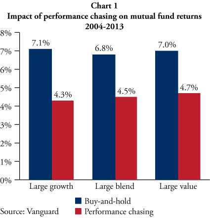

The Perils of Performance Chasing
All investors want to make the most of their hard-earned savings. However, a number of common behaviors have been shown to seriously harm investment results in the long run. Even seasoned professional investors can be lured into these pernicious behavioral traps. One of the most dangerous is a behavior known as performance chasing, in which investors select investments on the basis of past performance.
Given a set of investment options, each with different historical returns, it seems prudent to select the option with the best past performance. After all, the basic goal of investing is to maximize return, and it’s naturally intuitive that an investment that has performed well in the past would be more likely to perform well in the future than one that has not. Nevertheless, this simple intuition is incorrect.
It turns out that past performance actually reveals very little about how a particular investment may perform in the future. This conclusion has been so well established that the Securities and Exchange Commission (SEC), the primary regulator of investments in the US, requires any advertisements of investment performance to clearly state that “Past performance is not indicative of future results.” But despite this pervasive warning, multitudes of investors still select investments on the basis of past performance.
To fall into the trap of performance chasing once would be bad enough, but many investors engage in a continual process of reshuffling their investments on the basis of recent performance, repeating the same mistake over and over again. An investor holding several funds may notice that one of them underperformed last year, so he sells it and buys another fund which had much better returns. The next year, he sells another lagging fund and replaces it with another, more exciting fund currently on a hot streak. He continues this process year in and year out for decades, and when at last he discovers that his overall portfolio has significantly underperformed the market, he concludes he is the victim of bad luck. Tragically, he never understands that it was his own performance-chasing behavior that doomed his portfolio.
Careful research has shown just how harmful performance chasing can be. A study published in 2014 by Vanguard used data from 3,568 equity mutual funds over the period 2004-2013 to compare the returns of a simple buy-and-hold strategy with the returns of a performance-chasing strategy which periodically bought funds with high recent returns and sold funds with low recent returns. As illustrated in Chart 1, the study concluded that performance chasing reduced average returns by well over 2% per year—a tremendously high cost when compounded over many years.
To avoid the costly trap of performance chasing, investors must look beyond mere historical returns when assessing an investment strategy. The primary focus should not be on past performance, but rather on the underlying investment process. How is the portfolio constructed? What factors are expected to drive future outperformance? What evidence exists to support these expectations? Addressing these concerns does require effort from the investor, but examining an investment’s underlying process is far more relevant to good investment selection than simply looking at past returns.
After the hard work of carefully selecting an investment is complete, it is crucial for investors to remain disciplined through seasons of disappointing performance. An investment strategy can only outperform its benchmark by differing from that benchmark. As a result, even the best long-term strategies will inevitably experience periods of short-term underperformance. Only investors who can successfully resist the temptation of performance chasing during these episodes will likely realize superior results in the long run.